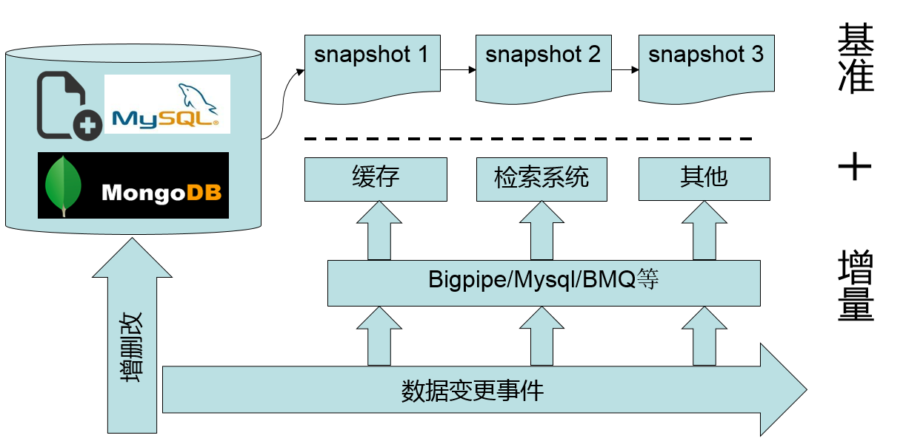

mysql binlog in realtime
众所周知，MySQL是最受欢迎的互联网数据库（没有之一）———————为开源而生。发展初期，很多公司都受益于其易用性和经济性。随着这些公司的成长，越来越多的公司投入到MySQL的开发中，因此MySQL的特性也越来越丰富，如：不同特性的存储引擎、Binlog主从复制方案等。
今天我们要探讨的就是如何实时解析MySQL Binlog，以及其所带来的巨大的业务价值。我可以在一瞬间说出很多应用场景，如：主从复制、缓存系统、检索引擎等。如下图所示，MySQL的Binlog不仅仅能用于MySQL服务之间的主从复制，还能造福其他非MySQL服务：

在一个成熟的商业系统中我们有且仅有一份正确的全量数据（这里指MySQL中的数据）。而面对现在应用丰富的功能以及用户越来越高的要求，MySQL并不能一直很好的满足我们。比如：我们需要使用缓存系统来加速服务，需要完备的检索系统来提供搜索服务，需要事件触发实时地发送通知等。但是摆在我们面前的问题是只有一份数据，且我们直接操作的都是MySQL（本文用MySQL来代表所有数据库系统），如何能让除MySQL之外的其他系统拥有同样的数据？且我们总是希望MySQL中的数据与其他系统的数据差异越小越好，越实时越好。当然我们可能会有一系列方案来解决这个问题，最典型的方法有两种：
- 双写， 当你在更新MySQL的同时更新缓存系统、更新检索引擎，触发事件发送通知。这么做的确能解决问题，但是因为都是异构系统，没有一种机制能够保证写入成功。也就是说随着时间的推移，数据差异会越来越大。不仅如此，如果外部系统很多，这么做还会影响到主业务逻辑的响应时间。
- 定时任务，在主业务逻辑中耦合更新其他系统的代码是不OK的，外部系统只有几个还行，如果要更新100个外部系统，这时候当如何处理呢？通过定时任务异步地去做这件事情看上去是一个更好的方案。的确如此，但是任务执行频率是多少呢？每1分钟？每10分钟？当然我们可以根据业务需要制定这个频率，乍想一下没啥问题，不过再想一下，定时任务具体用来做什么呢？
- 定时导出全量：在数据量比较少的时候这是最省事儿的方法，当然下游每次必须清空自己的数据重新全量导入，数据量稍大一点代价就特别大。
- 业务系统维护一个队列（在业务库中新建表当作队列）：在业务系统中操作数据的时候顺便把自己操作的日志写到队列里面，然后由下游来消费这个队列。
这种方式由业务系统来维护操作记录，好处是能保证数据的业务完整性，坏处是在业务端耦合了非业务相关的逻辑，每当数据有变更时都需要开启事务保证业务操作和其操作日志都能正确地写入。如果以后因为某些原因要直接操作DB，这种情况就很危险了，在操作DB时无法模拟复杂的业务逻辑计算和关系。
- 定时扫表找出变更记录：每条数据都会有一个updateTime (on update CURRENT_TIMESTAMP)字段，当该条记录被修改时，MySQL会隐式地更新这个字段为当前时间。这种方法使业务端远离水火，以一种更解耦的方式来处理增量，非常适合无状态缓存更新之类的场景，当然如果表记录数过大可能会有慢查询。但如果存在状态流转的的数据，这种方式会丢失状态流转方向。
如果你使用队列方式，很可能会写出下面这段代码：
$db = getDI()->get("test_db");
$db->begin();
$db->update("// logic operate");
$db->insert("// operate logs");
$db->commit();
而且很可能你设计的操作日志表看起来会是这样子的：
| event_id | user_id | object_id | level | event_type | mcid | addtime |
|
152 153 154 |
48 48 48 |
3007209739 3007209739 3007209739 |
200 202 201 |
23 24 24 |
0 0 0 |
2013-07-17 04:06:05 0000-00-00 00:00:00 0000-00-00 00:00:00 |
如果你扫表的话可能会写出下面这段SQL：
SELECT * FROM `products` WHERE updateTime > '2013-11-12 12:00:00' ORDER BY updateTime LIMIT 1000;
下面我来具体介绍下我们的应用场景，以及我们是如何利用MySQL Binlog解决这个问题的，先上图：

这是我们整个系统的架构图，左边可以看成用户系统，右边则是商业系统。浏览器向前端搜索服务集群（图中红色部份）发送请求后，前端集群会把用户的请求数据发往很多个后端服务，而不同的后端之间并不是同构的，所以基本上都会有一个“长连接/协议转换代理层”（图中红色部份），然后再由后端决定是否满足用户需求，最后再由前端集群拼接来自不同后端服务的结果并呈现给网民。
看似一个海量访问的服务，其实是由无数个小服务组成的，图中所示就是我们组做的小服务，在具体场景中蓝色部分做的事情是把前端服务集群的协议转换成FASTCGI协议，并转发给后端服务UI/PHP-FPM。虽然名称叫UI，但是做的不是我们所理解的UI的工作，而是对于后面的检索和数据流来说它是最前面的一部分，所以才叫UI。它承担的工作是解析代理层发来的数据，并根据请求数据和参数构造结构化的查询条件，当然这个构造的过程可能仍需要请求很多外部服务，然后向检索系统（BS）发出请求，BS返回的是一个实体ID集合（你可以理解为商品ID），UI根据实体ID到数据库（这里省略了缓存系统）里面查询实体详情，整个完程就是这样。
我们这个架构中也存在上面描述的异构系统，BS（Basic Search）模块是对Lucene的二次开发，它需要DB中的数据来建立索引，而客户会时不时地往DB里面写一些数据，为了能让UI实时地从BS中检索到新数据，DB的所有变更要能实时地体现到BS中，这是用双写／定时任务无法完成的。所以我们开发了基于MySQL Binlog的异步事件框架(AdPipe)。
AdPipe由以下几部分组成：
- BIZ framework: 大家都知道PHP是最快的，所以经常需要变更的事件逻辑使用PHP写。
- PHP ext: 为了能在PHP用户空间写Binlog事件逻辑，不可避免地需要PHP扩展。
- Binlog listener: 与MySQL Server连接，实现Binlog议协。
来看看BIZ框架的代码：
首先是启动脚本
上面代码主要职责是连接MySQL Server，并且设置Binlog的位置，建立连接后根据接收到的事件调用BinlogEvent相应的方法。而BinlogEvent所有方法仅仅返回一些状态码（IGNORE, SUCCESS, L_EXIT, SIGNAL_QUIT），这些状态码控制着消息该如何处理。
其次是事件处理类，BinlogEvent：
看171行，getHandleClass方法通过获取一个业务对象来处理事件，如果没有找到处理某个DB事件的类，那么默认会调用DefaultEvent来处理。
请看DefaultEvent类：
由于Binlog事件和DB的scheme是息息相关的，所以在DefaultEvent中也调用了Model类来获取表字段。每个事件处理类都有三个方法，onWrite, onUpdate, onDelete，你可以在方法中获取DB变更的数据，然后根据业务需求做各种变换，然后打包成消息。
接下来就说到消息类，这里的消息是指逻辑消息，是经过业务代码变换后准备发往BS的消息，Message
以上就是AdPipe系统中biz framework的代码，当然代码要能运行，需要安装binlog listener和php-binlog扩展，请点击下面链接查看：
- PHP Binlog: https://github.com/BullSoft/php-binlog
- MySQL Replication Listener: https://github.com/BullSoft/mysql-replication-listener
具体安装过程可以分别查看它们的readme。
如果biz framework挂了，会影响其他系统吗？
这是个好问题，如果biz framework挂了，我们也不用担心，因为在我们的架构中AdPipe的上游和下游都是队列，上游是binlog队列，而且文件存在MySQL服务器上：
| filename | position |
|
mysql-bin.000001 mysql-bin.000002 ... |
422655739 124544114 ... |
而我们的下游是ＡＭＱ之类的消息队列，BS通过ＡＭＱ来获取消息。上下游均通过队列解耦，所以biz framework不幸挂了，不会影响其他系统。
如果biz framework挂了，能快速恢复运行吗？
当然可以，biz framework每次处理完事件后，都会保存该事件的filename和position，所以如果服务挂掉，可以在连接MySQL服务器之后显示地设置filename和position，如：binlog_set_position($link, $filename, $position)。
下游（BS）如果挂了，能快速恢复吗？
这是个非常关键的问题，如果BS挂了它需要重建索引。随着系统的运行，增量数据越来越多，如果给BS一份最原始的基准基量文件，那么BS要消费从系统启动至今的所有增量消息，这可能需要几个月甚至一年。如果我们有一份最新的全量基准文件，情况就大不一样了，所以AdPipe另一个功能是定时生成最新的全量基准文件，以供下游恢复数据使用，这样下游只需追有限的增量消息便能跟上DB的数据。
所以这进一步引发我们对这个事情的思考，能不能设计一个通用的事件触发系统呢，这里我们只考虑 文件(inotify)/MySQL(binlog)/MongoDB(oplog)，其他类似于redis也有keyspace notifications功能。
